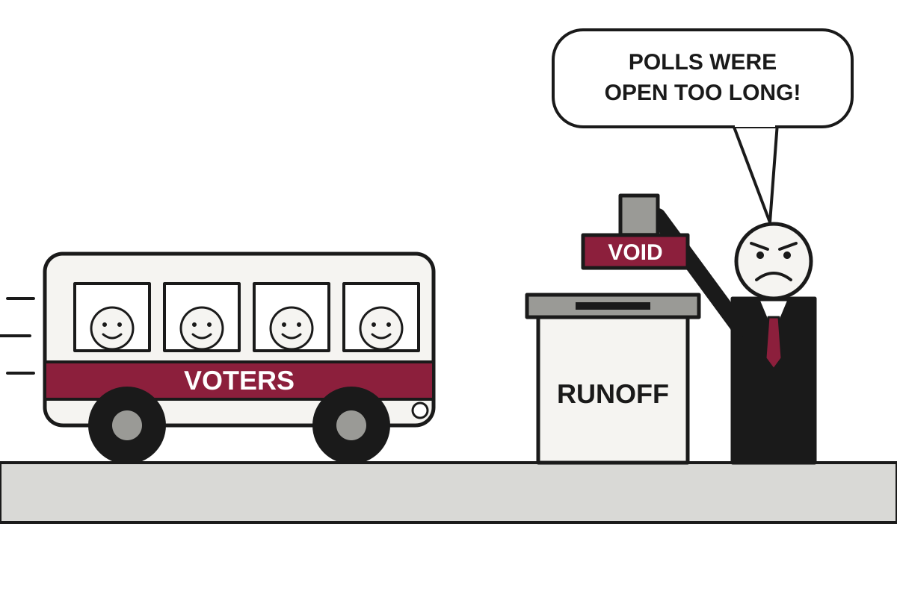

Lula Wins Fourth Term After Losing Round One, Which Brazil's Voters Said Was Optional
The 80-year-old president beat Flávio Bolsonaro 51.75% to 48.25%, becoming the first first-round runner-up to win a Brazilian runoff since democracy returned.
The wire said: Lula wins fourth term as Brazil president after historic upset over far-right Flávio Bolsonaro · The Guardian

Catch up
Brazil held a presidential runoff on Sunday between incumbent leftist Luiz Inácio Lula da Silva and right-wing Senator Flávio Bolsonaro, son of former president Jair Bolsonaro, who is serving 27 years for plotting a coup. Bolsonaro led the first round on October 4, 47% to 45%, according to Al Jazeera.Why it matters
Brazil is Latin America's largest country, and the result slows a run of pro-Trump right-wing victories in the region. A hostile Congress, a possible legal challenge and a US president with tariffs on hand mean the election may be over while the argument is not.Luiz Inácio Lula da Silva won a fourth term as president of Brazil on Sunday, defeating Flávio Bolsonaro in a runoff. With nearly 99% of votes counted, the Guardian reported Lula had 51.75% to his rival's 48.25%. Brazil's Superior Electoral Court called the race shortly after 9pm Brasília time, according to Al Jazeera. The count was settled faster than the argument over it.
The result is historic in a technical sense. Since democracy returned in the 1980s, no candidate who finished second in the first round had won the runoff. Lula had lost that round by 2.2 million votes. He won the second by 4.3 million, which is a swing of 6.5 million votes achieved in three weeks, mostly by persuading people to leave the house.
That is less glib than it sounds. The first round had a record abstention rate of 21.08%, which the Guardian said hit Lula voters hardest because they tend to live farther from polling stations. Translation: abstention means people who were eligible and did not turn up, and it matters more when the bus is the only way to turn up. In the runoff it fell to 19.21%.
The bus then became a plot point. Lula's allies accused Bolsonaro supporters of cutting public transport in Lula-leaning areas, Al Jazeera reported, while heavy rain hit southern areas considered Bolsonaro strongholds. Both campaigns petitioned the Supreme Court for more time, and polls stayed open two extra hours, until 7pm. Each side therefore received an extension and a grievance, which is the efficient way to run a dispute.
Lula also made an economic case. According to Al Jazeera, he championed a constitutional amendment this month shortening the workweek and floated free weekend public transport. He ran against a backdrop of lower poverty and unemployment but also high household debt, which is what happens when people feel poorer despite the statistics saying otherwise. In September he banned online gambling and sports betting apps.
Now the sequel. Bolsonaro has suggested he would seek to nullify the election, citing the longer voting hours, according to Al Jazeera. Donald Trump Jr. alleged judicial malpractice. Last year the Trump White House imposed 50% tariffs on certain Brazilian products to press for an end to Jair Bolsonaro's prosecution, and sanctioned judges including Alexandre de Moraes. Translation: tariffs are a tax on imports, here used as a foreign policy comment on another country's court case.
Lula, who turns 81 on Tuesday, acknowledged the road ahead in his victory speech, hoarse and coughing. 'I do not choose the Congress,' he said, adding that it was chosen by the people. This matters because Al Jazeera described the incoming body as the most right-wing in recent memory. He will be sworn in on January 5, 2027, as the oldest Brazilian president to take the oath since democracy returned.
Watch for whether the nullification effort becomes a lawsuit or a slogan, and whether Washington adds to its tariffs. Brazil has just demonstrated that a runoff can be won by getting your voters to show up, which is advice every campaign has received and few have followed.
Satire based on reporting by The Guardian, NPR World, Al Jazeera. Read the originals for the straight version.